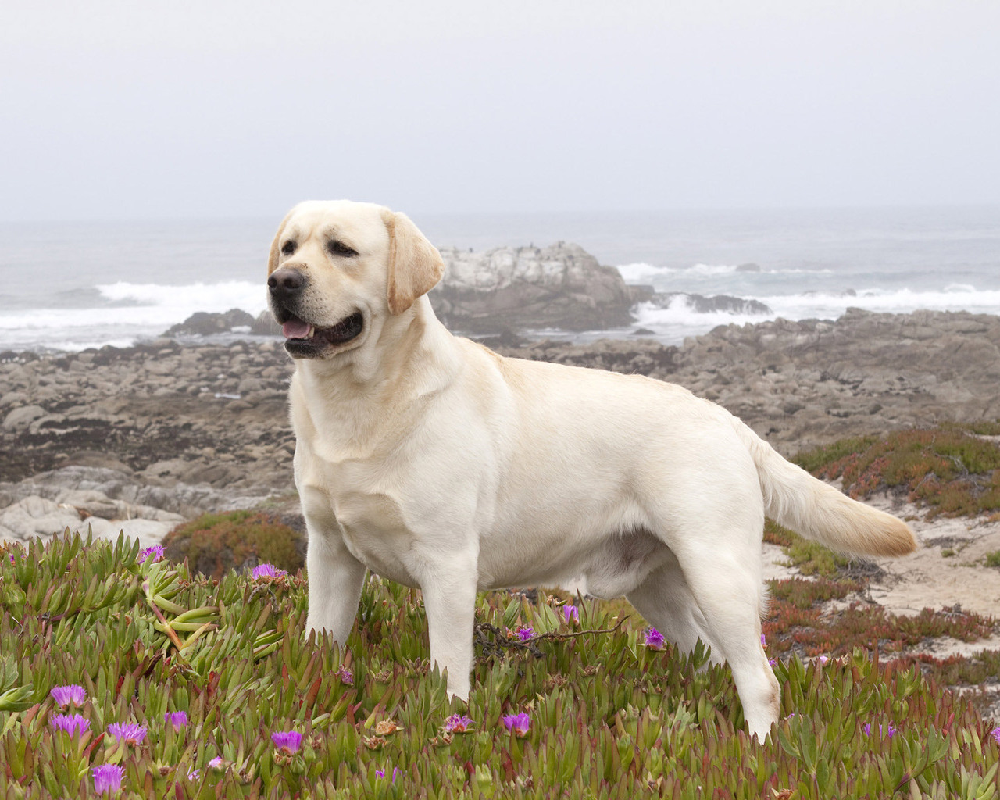
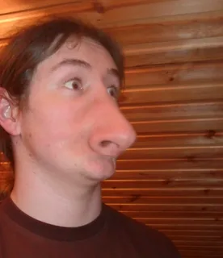

Этот код связывает вашу страницу с таблицой стилями, которая загружает семейство шрифтов Open Sans вместе с вашей страницей и позволяет вам применять их к вашим HTML элементам используя свою собственную таблицу стилей.
абзац абзац абзац абзац жирный текст абзац абзац
начинается ненумерованный список:
Этот код связывает вашу страницу с таблицой стилями, которая загружает семейство шрифтов Open Sans вместе с вашей страницей и позволяет вам применять их к вашим HTML элементам используя свою собственную таблицу стилей.
это простая обычная жирная ссылка на гугл 